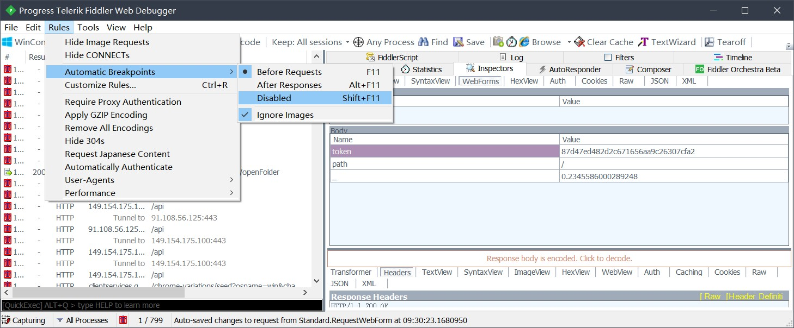

记一次拿到光猫超管账号改路由为桥接的过程
大家都知道，电信的光猫一般性能都比较差，在实现了光电转换功能的同时，默认的路由模式会让光猫背负起本来是路由器在干的拨号上网功能，笔者最近发现家里的网时不时会断流一秒，导致玩彩虹六号卡卡的，就想着如何改桥接，先是在网上搜到了通用的超级管理员密码 telecomadmin nE7jA%5m，但试了下发现是错误的，并且网上那种固定端口获取 dump 文件的方法也不适用于我的光猫，于是拨打客服电话问了问，客服也不愿意说，就只能自己动手了
以下是全过程记录：
第一步
首先，安装抓包软件 Fiddler Classic，然后准备好一个 fat32 格式的 U 盘，并在里面新建一个文件夹
然后插到光猫上，浏览器输入 192.168.1.1 进入天翼网关
输入光猫背后贴的用户账号密码，就是 useradmin 那个
然后进入存储管理，我们发现，U 盘被识别出来了

这时我们启动 fidder，然后选择下图所示的事前断点
然后手动去点击文件夹目录，你会发现，点不动，点不动就对了
这时去寻找到 cgi-bin/luci/admin/storage/openFolder 这条 URL
然后我们把其中的 U 盘路径改成斜杠，就是进入光猫根目录的意思
最后点击 Run to Completion，执行完毕
再把断点给关了

你会发现，我们已经进入到了光猫的根目录（如果没进去，刷新下页面，应该是登录信息过期了，整个过程再做一遍，手速要快点）
接着我们把这个路径下的文件复制出来到你的 U 盘里

这时候就可以把 U 盘拔了插电脑上了
第二步
拿到设置文件后，我们发现，表面是 xml 格式，但是实际是加密过的二进制文件，这里引用下 52 破解一个大佬的解码猜测过程
https://www.52pojie.cn/thread-1005978-1-1.html
1 | function UnZipCofing(Fname: string): string; |
鉴于 delphi 太冷门了，没有学习价值，所以可以选择直接下载现成的工具 RouterPassView（软件有壳，杀软会误报）
https://www.nirsoft.net/utils/router_password_recovery.html
解密出来之后我们搜索到如下的字段

光猫管理员的账号密码也就出来了
登录之后我们发现，wow，界面都变了，直接迅速找到网络设置，业务类型是上网的那个连接，我们在超管的情况下只能看到拨号上网的账号，密码可以用到网上营业厅的宽带密码服务去重置或者修改，按道理装完宽带给的回执也会记录你的账号密码
然后路由改成桥接，其他默认配置建议小白不要碰
这里的 QoS 模块也可以顺手设置一下（注意，此处的 QoS 是用来控制你上网流量、电话和 IPTV 流量的优先级的）
然后，我们到路由器上，直接把以前的自动获取 IP 模式换成拨号上网模式（路由器设置地址和界面大家都不一样，发挥主观能动性，找到类似的设置即可，我这边路由器是浏览器输入 192.168.0.1 进入，别的路由器可以找说明书有说如何进入）
然后我们拿国人开发的小工具
https://github.com/HMBSbige/NatTypeTester/releases
测下 NAT 类型
我们发现，是 NAT1 的 FullCone
到这一步，就结束了
enjoy it！